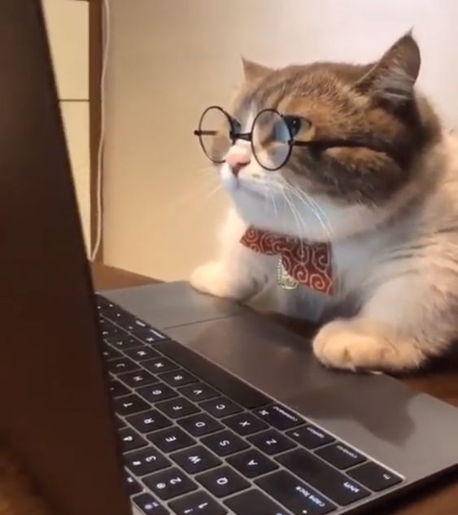

Gatos influencer
Aca encotraras informacion sobre las gatitos mas famosos de internet.


Aca encotraras informacion sobre las gatitos mas famosos de internet.
El popular gato gruñón tienen más de 2.6 millones de seguidores en Instagram. Con su reconocible expresión facial debida al enanismo felino y una maloclusión en mandíbula, Grumpy Cat, se cuela en el puesto número 1 de nuestra lista de gatos más famosos.
Has click Aqui para ver su instagram.
Esta linda y esponjosa gatita tiene un récord Guinness por ser la gata más seguida en Instagram con 4.2 millones de seguidores. Además, sus ojos bizcos le hacen ser totalmente adorable y achuchable.
Has click Aqui para ver su instagram.
Seguro que alguna vez has visto alguna foto de Venus, la célebre gata de dos caras. Su rostro es mitad negro y mitad atigrado, y sus ojos son heterocromáticos, siendo su ojo derecho verde y su ojo izquierdo azul. Una gatita más camaleónica que el mismísimo David Bowie.
Has click Aqui para ver su instagram.